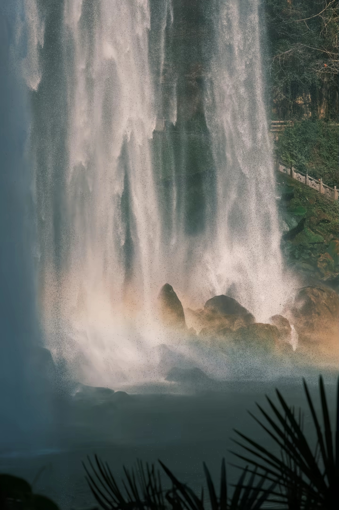

亚洲第一瀑 · 国家AAAA级景区 · 巴渝十二景 · 2.5亿年地质奇观
万州大瀑布群旅游区位于重庆市万州区甘宁镇，距城区约30公里，是国家AAAA级旅游景区和重庆市级风景名胜区。景区面积约60.13平方公里，核心景点万州大瀑布宽151米，高64.5米，单挂面积9739.5平方米，是迄今发现的亚洲面积最大的单挂瀑布，被誉为“亚洲第一瀑”。2015年，万州大瀑布被列入“2015新重庆·巴渝十二景”自然景观类名单。
万州大瀑布又称青龙瀑布、甘宁瀑布——因上游有青龙河而得名“青龙瀑布”，又因地处三国东吴大将甘宁的故里，当地人称之为“甘宁瀑布”。大瀑布群呈三级梯级瀑布群，沿青龙河由上而下至瀼渡长江口，分别有万州大瀑布、仙女滩瀑布、鲸鱼口瀑布，全长约12公里，共同构成了三峡旅游线独特的瀑布群景观。
景区山青、水秀、瀑宽、洞奇、潭幽、湖大、虹美，共有大小景点50多个。以万州大瀑布为核心，涵盖青龙河、青龙洞、水帘洞、白鹭栖息地、黑马崖等多种自然景观，以及甘宁将军墓、甘宁将军塑像、何其芳故居、太白阁等人文景点。2012年成功申报国家4A级景区以来，景区累计投入逾2.8亿元，持续打造三峡旅游精品目的地。
瀑布宽度
瀑布高度
单挂面积
大小景点
万州大瀑布的形成可追溯至中生代三迭纪和侏罗纪年代，距今约2.5亿年。景区地处新华夏系第三沉降带川东褶皱带和川鄂湘黔隆起褶皱带的组合部，地质复杂，属典型的喀斯特地貌。山体为条状单斜地形，厚层硬质砂岩发育区多陡崖峭壁，海拔在280米至670米之间。
青龙河贯穿全境，汇集6条主要河岔和60多条溪流的丰沛水量，长年浩浩荡荡，凌空飞泻直落青龙深潭。瀑布下方有两个天然形成的巨大岩洞——水帘洞和青龙洞（又名观音古洞），面积分别为1600余平方米和7000余平方米，高50多米，洞中有清代摩崖石刻和古城墙等遗迹。
大瀑布终年流水不断，气势磅礴，撼人心魄。由飞瀑、阳光形成的七色彩虹横跨峡谷，千姿百态，宛若人间仙境。瀑布之下，青龙深潭碧绿如玉，水雾弥漫，晴天可见彩虹飞架，雨天则水雾与丝雨交融，别有一番朦胧之美。
万州大瀑布不仅是“大”，更有“奇”与“妙”。它是目前亚洲唯一可以360度全景观赏的瀑布，游客可通过多种方式与瀑布亲密接触。
古栈道犹如游龙般蜿蜒于悬崖峭壁之间，不可不上。行走其上，飞瀑轰鸣在耳，水雾扑面而来。
晴天能赏瀑间彩虹，雨中同沐瀑布水雾与缠绵丝雨，感受大自然最纯净的洗礼。
乘坐竹筏逆流而上，在水上近距离感受瀑布的磅礴气势，体验惊险刺激的亲水之旅。
风驰电掣穿梭于山林之间，感受速度与激情的碰撞，是亲子游客的最爱。
古老沧桑的石桥横跨青龙河，是观赏瀑布全景的绝佳位置，也是拍照打卡的经典机位。
一台富于巴东文化特色的精彩表演，展现三国名将甘宁故里的武术传承与民间文化。
水帘洞洞阔1600平方米，深数十米。洞内观瀑，茫茫水帘，瀑雨飞舞，瀑雾弥漫，遮天蔽日，流光彩幔，辉煌夺目。游客可乘船穿越水帘，感受“飞流直下三千尺”的震撼。
青龙洞面积达7000余平方米，高50多米，洞中青山碧水，相映成趣。洞内有清代摩崖石刻和古城墙等遗迹，梵音袅袅，自然天成的“天工画壁”令人叹为观止。
两大天然岩洞均形成于瀑布长期冲刷侵蚀之下，是万州大瀑布区别于其他著名瀑布的独特之处。正如景区负责人所言，万州大瀑布不仅是“大”，更在于“奇”与“妙”——游客可以走入瀑布内部，从内向外仰望飞流直下的壮丽景观，这种体验在亚洲瀑布中独一无二。
万州大瀑布所在的甘宁镇，是三国东吴大将甘宁的故里。甘宁，字兴霸，东汉巴郡临江（今重庆万州甘宁镇）人，少年有力，读诸子，17岁左右任过蜀郡丞，后归吴见用于孙权。史书记载甘宁“破黄祖据楚关，攻曹仁取夷陵，镇益阳拒关羽，守西陵获朱光，击合肥退张辽”，战功卓著，是中国历史上一位赫赫有名的战将。
景区内保留有甘宁将军墓（衣冠冢）和甘宁将军塑像，供后人瞻仰。此外，甘宁镇还诞生了现代著名文学家、诗人何其芳，其故居亦在景区范围内。甘宁镇因此拥有了三国名将和现代诗人这“文武双星”。
甘宁镇文化厚重，市级非物质文化遗产“甘宁鼓乐”衍生于此。当地流传着众多与甘宁将军相关的民间传说故事，这些故事有人物、有事件、有情节，为万州大瀑布观光的游客提供了丰富的文化大餐。游客在饱览自然风光之余，也能感受到甘宁镇作为“文藻胜地”的深厚人文底蕴。
万州大瀑布不仅以自然奇观著称，更以深厚的人文积淀闻名。据万州区文化和旅游发展委员会记载，唐代诗仙李白、诗圣杜甫、诗王白居易，宋代书法家苏轼、黄庭坚、米芾，明代才子唐寅（唐伯虎）、文徵明，以及《西游记》作者吴承恩，都曾在此留下足迹与故事。此外，道隆法师、破山禅师等高僧也曾在此参禅修行。
景区内的太白阁、醉吟廊、涪翁亭、陶然长廊等建筑，便是为纪念这些文化名人而建。漫步其间，仿佛穿越千年，与古人在瀑布轰鸣声中对话。这些深厚的人文积淀，使万州大瀑布不仅是一处自然奇观，更是一座承载巴渝文脉的诗画长廊。
万州大瀑布群旅游区由青龙瀑布、甘宁湖、白云洞、贯峰书院和逍遥庄5大景区39个景点组成，集山、水、瀑、洞、潭、湖、林于一体，是三峡旅游线上不可错过的综合性自然风景区。
核心景区，万州大瀑布所在地，含水帘洞、观音古洞、天风栈道等核心景点。
瀑布上游的宽阔湖面，碧波荡漾，可泛舟游览，感受山水相依的静谧之美。
天然溶洞景观，洞内钟乳石千姿百态，与瀑布形成的地表景观相互呼应。
历史悠久的书院遗址，承载着甘宁镇崇文重教的文化传统。
集休闲度假于一体的综合服务区，提供餐饮、住宿等配套服务。
景区建议游览时间为2-3小时，以下为最优游览路径：
入口 → 开瑞轩 → 陶然长廊 → 丛林飞车售票处 → 青青世界 → 无名廊 → 神秘石刻 → 陆安古桥 → 过跳石 → 观瀑台 → 达摩古洞 → 过跳石返回 → 甘宁广场（甘宁墓）→ 冰雪奇缘 → 太白阁 → 云水天 → 水帘洞 → 出口
沿着这条线路，您将依次领略陆安古桥的历史沧桑、观瀑台上瀑布全景的震撼、甘宁广场的三国文化、水帘洞中穿越瀑布的奇妙体验。天风栈道蜿蜒于悬崖峭壁之间，是途中不可错过的惊险路段。
自驾：下渝宜高速后可随武陵、忠县、龙沙、响水、郭村、甘宁等线路公交车在甘宁丝厂处下万忠路（有景区路标），车程两分钟可到景区。公交：可在万州市中心乘坐公交车（武陵、忠县、龙沙、响水、郭村、甘宁方向）到景区，公交车途经景区。
※ 以上票价及时间供参考，具体以景区实际公告为准。2025年11月25日至2026年4月30日期间，万州大瀑布群对全国公安民警免门票。咨询电话：023-58234555。
“青龙出峡势如虹，万斛珠玑泻碧空。
水雾迷蒙遮日月，银河倒挂入潭中。”
——题万州大瀑布
从2.5亿年前的地质变迁，到三国名将甘宁的故里传奇，从唐宋名家的足迹留痕，到今日“亚洲第一瀑”的壮美风姿——万州大瀑布以它惊天地、泣鬼神的磅礴气势，等待着每一位热爱自然的旅人前来探访。